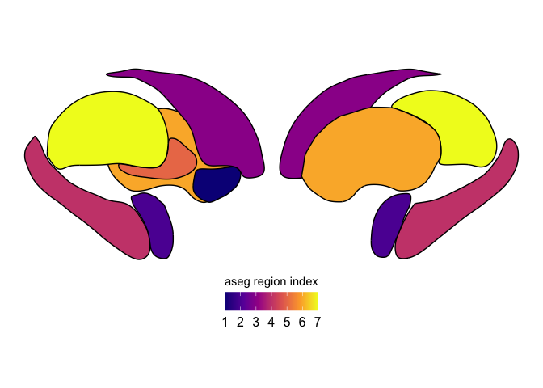
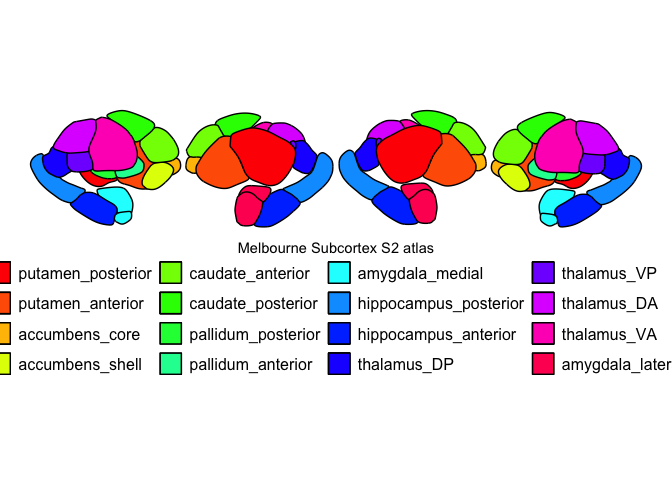
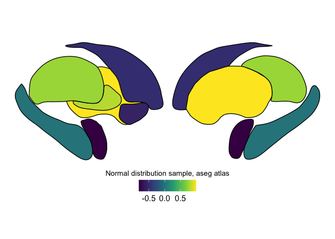
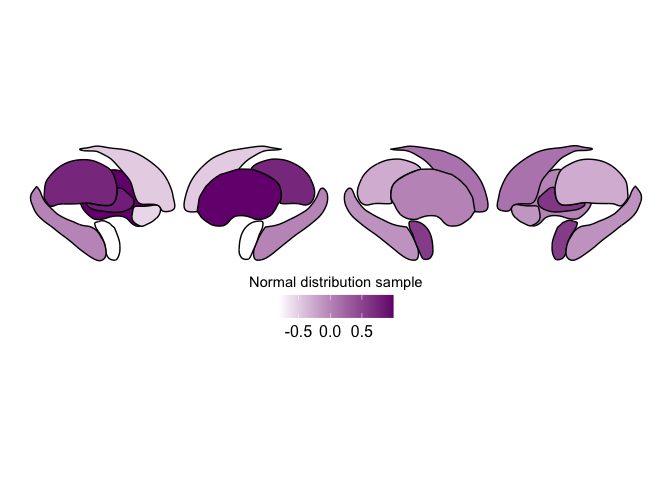

subcortexVisualizationR tutorial
2026-01-29
Load required packages
library(subcortexVisualizationR)
## Loading required package: tidyverse
## ── Attaching core tidyverse packages ──────────────────────── tidyverse 2.0.0 ──
## ✔ dplyr 1.1.4 ✔ readr 2.1.6
## ✔ forcats 1.0.1 ✔ stringr 1.6.0
## ✔ ggplot2 4.0.1 ✔ tibble 3.3.1
## ✔ lubridate 1.9.4 ✔ tidyr 1.3.2
## ✔ purrr 1.2.1
## ── Conflicts ────────────────────────────────────────── tidyverse_conflicts() ──
## ✖ dplyr::filter() masks stats::filter()
## ✖ dplyr::lag() masks stats::lag()
## ℹ Use the conflicted package (<http://conflicted.r-lib.org/>) to force all conflicts to become errors
library(tidyverse)
Example data just to show the different regions
First, let’s create a simple dataframe with the left hemisphere cortical
regions, assigning a different value to each region for visual clarity.
Note that all data passed to plot_subcortical_data needs to follow the
same three-column structure as shown below: region (the name of the
subcortical region with the same nomenclature as shown), value (the
value to be plotted in the subcortex map), and Hemisphere (either ‘L’,
‘R’, or ‘both’).
# Set seed for reproducibility
example_subcortex_data = data.frame(region = c("accumbens", "amygdala",
"caudate", "hippocampus",
"pallidum", "putamen",
"thalamus"),
value = 1:7,
Hemisphere = "L")
example_subcortex_data
## region value Hemisphere
## 1 accumbens 1 L
## 2 amygdala 2 L
## 3 caudate 3 L
## 4 hippocampus 4 L
## 5 pallidum 5 L
## 6 putamen 6 L
## 7 thalamus 7 L
Now, we can plot this data with the plasma colormap as an example in
the left cortex. Note the following arguments:
subcortex_data: The three-column data.frame shown aboveatlas: The name of the atlas to plotline_thickness: How thick the lines around each subcortical region should be drawn, in mm (default is 0.5)line_color: What color the lines around each subcortical region should be (default is ‘black’)hemisphere: Which hemisphere (‘L’ or ‘R’) thesubcortex_datais from; can also be ‘both’ (default is ‘L’)fill_title: Name to add to legendcmap: Name of colormap (e.g., ‘plasma’ or ‘viridis’) or amatplotlib.colors.Colormap(default is ‘viridis’)vmin: Min fill value; this is optional, and you would only want to use this to manually constrain the fill range to match another figurevmax: Max fill value; this is optional, and you would only want to use this to manually constrain the fill range to match another figure
plot_subcortical_data(subcortex_data=example_subcortex_data, atlas = 'aseg',
line_thickness=0.5, line_color='black',
hemisphere='L', fill_title = "aseg region index", cmap='plasma',
vmin=NA, vmax=NA)
## SVG contains a tag not currently handled: <namedview>
## Joining with `by = join_by(region, Hemisphere, face)`
## Joining with `by = join_by(region, Hemisphere)`

If we wanted to plot this with the inferno color palette instead, just
swap out the cmap argument values:
plot_subcortical_data(subcortex_data=example_subcortex_data, atlas = 'aseg',
hemisphere='L', fill_title = "aseg region index", cmap='inferno')
## SVG contains a tag not currently handled: <namedview>
## Joining with `by = join_by(region, Hemisphere, face)`
## Joining with `by = join_by(region, Hemisphere)`

By default, plot_subcortical_data will plot the index values of each
region, so we actually don’t need to pass in a dataframe for this
visualization purpose. Here, we can plot the region indices for the
Melbourne Subcortex S1 atlas in the right hemisphere without passing in
any data:
plot_subcortical_data(atlas = 'Melbourne_S1', hemisphere='R',
fill_title = "Melbourne Subcortex S1 atlas region",
cmap='viridis')
## SVG contains a tag not currently handled: <namedview>
## Joining with `by = join_by(region, Hemisphere, face)`

To plot both hemispheres using gray lines at thickness 1.0, we can set
the hemisphere argument to ‘both’ and adjust the line_thickness and
line_color arguments accordingly:
plot_subcortical_data(atlas = 'Melbourne_S1', hemisphere='both',
line_color='gray', line_thickness=1,
fill_title = "Melbourne Subcortex S1 atlas region", cmap='viridis')
## SVG contains a tag not currently handled: <namedview>
## Joining with `by = join_by(region, Hemisphere, face)`

We can also use the S2 level of granularity from the Melbourne Subcortex (Tian 2020) Atlas:
plot_subcortical_data(atlas = 'Melbourne_S2', hemisphere='both',
fill_title = "Melbourne Subcortex S2 atlas", cmap=rainbow)
## SVG contains a tag not currently handled: <namedview>
## Joining with `by = join_by(region, Hemisphere, face)`

Lastly, let’s view the atlas for (1) AICHA subcortex; (2) Brainnetome subcortex; and (3) SUIT cerebellum:
# AICHA
plot_subcortical_data(atlas = 'AICHA', hemisphere='both',
fill_title = "AICHA subcortex atlas", cmap=rainbow)
## SVG contains a tag not currently handled: <namedview>
## Joining with `by = join_by(region, Hemisphere, face)`

# Brainnetome
plot_subcortical_data(atlas = 'Brainnetome', hemisphere='both',
fill_title = "Brainnetome subcortex atlas", cmap=rainbow)
## SVG contains a tag not currently handled: <namedview>
## Joining with `by = join_by(region, Hemisphere, face)`

# SUIT cerebellum
plot_subcortical_data(atlas = 'SUIT_cerebellar_lobule', hemisphere='both',
fill_title = "SUIT cerebellum atlas", cmap=rainbow)
## [1] "Individual-hemisphere visualization is not supported with the SUIT cerebellar lobule atlas. Rendering both hemispheres together, along with the vermis."
## SVG contains a tag not currently handled: <namedview>
## Joining with `by = join_by(region, Hemisphere, face)`

Simulating and visualizing continuous data
set.seed(127)
example_continuous_data_L <- data.frame(region = c("accumbens", "amygdala",
"caudate", "hippocampus",
"pallidum", "putamen",
"thalamus"),
Hemisphere = 'L',
value = rnorm(7))
example_continuous_data_R <- data.frame(region = c("accumbens", "amygdala",
"caudate", "hippocampus",
"pallidum", "putamen",
"thalamus"),
Hemisphere = 'R',
value = rnorm(7))
example_continuous_data <- rbind(example_continuous_data_L, example_continuous_data_R)
# See what the left hemisphere data, randomly sampled from a normal distribution, looks like
example_continuous_data
## region Hemisphere value
## 1 accumbens L -0.567733740
## 2 amygdala L -0.814760579
## 3 caudate L -0.493939596
## 4 hippocampus L 0.001818846
## 5 pallidum L 0.819784933
## 6 putamen L 0.996757858
## 7 thalamus L 0.751782219
## 8 accumbens R -0.125547223
## 9 amygdala R 0.564619888
## 10 caudate R 0.133508557
## 11 hippocampus R -0.105963209
## 12 pallidum R 0.605929618
## 13 putamen R 0.013250975
## 14 thalamus R -0.278788699
Plot the left hemisphere:
plot_subcortical_data(subcortex_data=example_continuous_data_L, atlas = 'aseg',
hemisphere='L', fill_title = "Normal distribution sample, aseg atlas",
cmap='viridis')
## SVG contains a tag not currently handled: <namedview>
## Joining with `by = join_by(region, Hemisphere, face)`
## Joining with `by = join_by(region, Hemisphere)`

Right hemisphere:
plot_subcortical_data(subcortex_data=example_continuous_data_R, atlas = 'aseg',
hemisphere='R', fill_title = "Normal distribution sample, aseg atlas",
cmap='viridis')
## SVG contains a tag not currently handled: <namedview>
## Joining with `by = join_by(region, Hemisphere, face)`
## Joining with `by = join_by(region, Hemisphere)`

Both hemispheres together:
plot_subcortical_data(subcortex_data=example_continuous_data, atlas = 'aseg',
hemisphere='both', fill_title = "Normal distribution sample, aseg atlas",
cmap='viridis')
## SVG contains a tag not currently handled: <namedview>
## Joining with `by = join_by(region, Hemisphere, face)`
## Joining with `by = join_by(region, Hemisphere)`

You can pass in a custom colormap too! For example, if you want to fill in with a gradient ranging from white to purple:
plot_subcortical_data(subcortex_data=example_continuous_data, atlas = 'aseg',
hemisphere='both', fill_title = "Normal distribution sample",
cmap=c('white', '#76167D'))
## SVG contains a tag not currently handled: <namedview>
## Joining with `by = join_by(region, Hemisphere, face)`
## Joining with `by = join_by(region, Hemisphere)`

Since this data has positive and negative values,
Since this data has positive and negative values, we can pass in a color
palette from blue (negative) to white (0) to red (positive).
plot_subcortical_data takes an argument midpoint that specifies the
center point for the color palette. Setting this to 0 here enforces the
center value to be white. Without setting vmin/vmax explicitly, the
color range will be defined symmetrically around midpoint to capture
the full range of the data.
plot_subcortical_data(subcortex_data=example_continuous_data, atlas = 'aseg',
hemisphere='both', fill_title = "Normal distribution sample",
cmap=c("blue", "white", "red"), midpoint=0)
## SVG contains a tag not currently handled: <namedview>
## Joining with `by = join_by(region, Hemisphere, face)`
## Joining with `by = join_by(region, Hemisphere)`